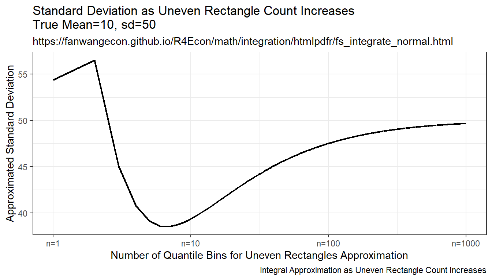
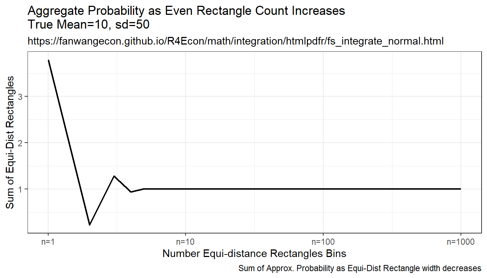
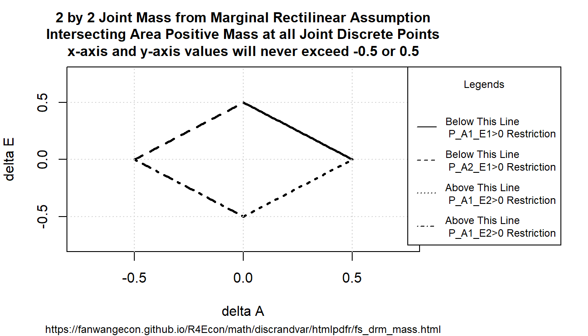

Chapter 9 Statistics
9.1 Distributions
9.1.1 Integrate Over Normal Guassian Process Shock
Go back to fan’s REconTools Package, R Code Examples Repository (bookdown site), or Intro Stats with R Repository (bookdown site).
Some Common parameters
fl_eps_mean = 10
fl_eps_sd = 50
fl_cdf_min = 0.000001
fl_cdf_max = 0.999999
ar_it_draws <- seq(1, 1000)9.1.1.1 Randomly Sample and Integrate (Monte Carlo Integration)
Compare randomly drawn normal shock mean and known mean. How does simulated mean change with draws. Actual integral equals to \(10\), as sample size increases, the sample mean approaches the integration results, but this is expensive, even with ten thousand draws, not very exact.
# Simulate Draws
set.seed(123)
ar_fl_means <-
sapply(ar_it_draws, function(x)
return(mean(rnorm(x[1], mean=fl_eps_mean, sd=fl_eps_sd))))
ar_fl_sd <-
sapply(ar_it_draws, function(x)
return(sd(rnorm(x[1], mean=fl_eps_mean, sd=fl_eps_sd))))
mt_sample_means <- cbind(ar_it_draws, ar_fl_means, ar_fl_sd)
colnames(mt_sample_means) <- c('draw_count', 'mean', 'sd')
tb_sample_means <- as_tibble(mt_sample_means)
# Graph
# x-labels
x.labels <- c('n=1', 'n=10', 'n=100', 'n=1000')
x.breaks <- c(1, 10, 100, 1000)
# Shared Subtitle
st_subtitle <- paste0('https://fanwangecon.github.io/',
'R4Econ/math/integration/htmlpdfr/fs_integrate_normal.html')
# Shared Labels
slb_title_shr = paste0('as Sample Size Increases\n',
'True Mean=', fl_eps_mean,', sd=',fl_eps_sd)
slb_xtitle = paste0('Sample Size')
# Graph Results--Draw
plt_mean <- tb_sample_means %>%
ggplot(aes(x=draw_count, y=mean)) +
geom_line(size=0.75) +
labs(title = paste0('Sample Mean ', slb_title_shr),
subtitle = st_subtitle,
x = slb_xtitle,
y = 'Sample Mean',
caption = 'Mean of Sample Integrates to True Mean') +
scale_x_continuous(trans='log10', labels = x.labels, breaks = x.breaks) +
theme_bw()
print(plt_mean)
plt_sd <- tb_sample_means %>%
ggplot(aes(x=draw_count, y=sd)) +
geom_line(size=0.75) +
labs(title = paste0('Sample Standard Deviation ', slb_title_shr),
subtitle = st_subtitle,
x = slb_xtitle,
y = 'Sample Standard Deviation',
caption = 'Standard Deviation of Sample Integrates to True SD') +
scale_x_continuous(trans='log10', labels = x.labels, breaks = x.breaks) +
theme_bw()
print(plt_sd)9.1.1.2 Integration By Symmetric Uneven Rectangle
Draw on even grid from close to 0 to close to 1. Get the corresponding x points to these quantile levels. Distance between x points are not equi-distance but increasing and symmetric away from the mean. Under this approach, each rectangle aims to approximate the same area.
Resulting integration is rectangle based, but rectangle width differ. The rectangles have wider width as they move away from the mean, and thinner width close to the mean. This is much more stable than the random draw method, but note that it converges somewhat slowly to true values as well.
mt_fl_means <-
sapply(ar_it_draws, function(x) {
fl_prob_break = (fl_cdf_max - fl_cdf_min)/(x[1])
ar_eps_bounds <- qnorm(seq(fl_cdf_min, fl_cdf_max,
by=(fl_cdf_max - fl_cdf_min)/(x[1])),
mean = fl_eps_mean, sd = fl_eps_sd)
ar_eps_val <- (tail(ar_eps_bounds, -1) + head(ar_eps_bounds, -1))/2
ar_eps_prb <- rep(fl_prob_break/(fl_cdf_max - fl_cdf_min), x[1])
ar_eps_fev <- dnorm(ar_eps_val,
mean = fl_eps_mean, sd = fl_eps_sd)
fl_cdf_total_approx <- sum(ar_eps_fev*diff(ar_eps_bounds))
fl_mean_approx <- sum(ar_eps_val*(ar_eps_fev*diff(ar_eps_bounds)))
fl_sd_approx <- sqrt(sum((ar_eps_val-fl_mean_approx)^2*(ar_eps_fev*diff(ar_eps_bounds))))
return(list(cdf=fl_cdf_total_approx, mean=fl_mean_approx, sd=fl_sd_approx))
})
mt_sample_means <- cbind(ar_it_draws, as_tibble(t(mt_fl_means)) %>% unnest())
colnames(mt_sample_means) <- c('draw_count', 'cdf', 'mean', 'sd')
tb_sample_means <- as_tibble(mt_sample_means)
# Graph
# x-labels
x.labels <- c('n=1', 'n=10', 'n=100', 'n=1000')
x.breaks <- c(1, 10, 100, 1000)
# Shared Labels
slb_title_shr = paste0('as Uneven Rectangle Count Increases\n',
'True Mean=', fl_eps_mean,', sd=',fl_eps_sd)
slb_xtitle = paste0('Number of Quantile Bins for Uneven Rectangles Approximation')
# Graph Results--Draw
plt_mean <- tb_sample_means %>%
ggplot(aes(x=draw_count, y=mean)) +
geom_line(size=0.75) +
labs(title = paste0('Average ', slb_title_shr),
subtitle = st_subtitle,
x = slb_xtitle,
y = 'Approximated Mean',
caption = 'Integral Approximation as Uneven Rectangle Count Increases') +
scale_x_continuous(trans='log10', labels = x.labels, breaks = x.breaks) +
theme_bw()
print(plt_mean)
plt_sd <- tb_sample_means %>%
ggplot(aes(x=draw_count, y=sd)) +
geom_line(size=0.75) +
labs(title = paste0('Standard Deviation ', slb_title_shr),
subtitle = st_subtitle,
x = slb_xtitle,
y = 'Approximated Standard Deviation',
caption = 'Integral Approximation as Uneven Rectangle Count Increases') +
scale_x_continuous(trans='log10', labels = x.labels, breaks = x.breaks) +
theme_bw()
print(plt_sd)
plt_cdf <- tb_sample_means %>%
ggplot(aes(x=draw_count, y=cdf)) +
geom_line(size=0.75) +
labs(title = paste0('Aggregate Probability ', slb_title_shr),
subtitle = st_subtitle,
x = slb_xtitle,
y = 'Sum of Uneven Rectangles',
caption = 'Sum of Approx. Probability as Uneven Rectangle Count Increases') +
scale_x_continuous(trans='log10', labels = x.labels, breaks = x.breaks) +
theme_bw()
print(plt_cdf)
9.1.1.3 Integration By Constant Width Rectangle (Trapezoidal rule)
This is implementing even width recentagle, even along x-axix. Rectangle width are the same, height is \(f(x)\). This is even width, but uneven area. Note that this method approximates the true answer much better and more quickly than the prior methods.
mt_fl_means <-
sapply(ar_it_draws, function(x) {
fl_eps_min <- qnorm(fl_cdf_min, mean = fl_eps_mean, sd = fl_eps_sd)
fl_eps_max <- qnorm(fl_cdf_max, mean = fl_eps_mean, sd = fl_eps_sd)
fl_gap <- (fl_eps_max-fl_eps_min)/(x[1])
ar_eps_bounds <- seq(fl_eps_min, fl_eps_max, by=fl_gap)
ar_eps_val <- (tail(ar_eps_bounds, -1) + head(ar_eps_bounds, -1))/2
ar_eps_prb <- dnorm(ar_eps_val, mean = fl_eps_mean, sd = fl_eps_sd)*fl_gap
fl_cdf_total_approx <- sum(ar_eps_prb)
fl_mean_approx <- sum(ar_eps_val*ar_eps_prb)
fl_sd_approx <- sqrt(sum((ar_eps_val-fl_mean_approx)^2*ar_eps_prb))
return(list(cdf=fl_cdf_total_approx, mean=fl_mean_approx, sd=fl_sd_approx))
})
mt_sample_means <- cbind(ar_it_draws, as_tibble(t(mt_fl_means)) %>% unnest())
colnames(mt_sample_means) <- c('draw_count', 'cdf', 'mean', 'sd')
tb_sample_means <- as_tibble(mt_sample_means)
# Graph
# x-labels
x.labels <- c('n=1', 'n=10', 'n=100', 'n=1000')
x.breaks <- c(1, 10, 100, 1000)
# Shared Labels
slb_title_shr = paste0('as Even Rectangle Count Increases\n',
'True Mean=', fl_eps_mean,', sd=',fl_eps_sd)
slb_xtitle = paste0('Number Equi-distance Rectangles Bins')
# Graph Results--Draw
plt_mean <- tb_sample_means %>%
ggplot(aes(x=draw_count, y=mean)) +
geom_line(size=0.75) +
labs(title = paste0('Average ', slb_title_shr),
subtitle = st_subtitle,
x = slb_xtitle,
y = 'Integrated Mean',
caption = 'Integral Approximation as Even Rectangle width decreases') +
scale_x_continuous(trans='log10', labels = x.labels, breaks = x.breaks) +
theme_bw()
print(plt_mean)
plt_sd <- tb_sample_means %>%
ggplot(aes(x=draw_count, y=sd)) +
geom_line(size=0.75) +
labs(title = paste0('Standard Deviation ', slb_title_shr),
subtitle = st_subtitle,
x = slb_xtitle,
y = 'Standard Deviation',
caption = 'Integral Approximation as Even Rectangle width decreases') +
scale_x_continuous(trans='log10', labels = x.labels, breaks = x.breaks) +
theme_bw()
print(plt_sd)
plt_cdf <- tb_sample_means %>%
ggplot(aes(x=draw_count, y=cdf)) +
geom_line(size=0.75) +
labs(title = paste0('Aggregate Probability ', slb_title_shr),
subtitle = st_subtitle,
x = slb_xtitle,
y = 'Sum of Equi-Dist Rectangles',
caption = 'Sum of Approx. Probability as Equi-Dist Rectangle width decreases') +
scale_x_continuous(trans='log10', labels = x.labels, breaks = x.breaks) +
theme_bw()
print(plt_cdf)
9.2 Discrete Random Variable
9.2.1 Obtaining Joint Distribution from Marginal with Rectilinear Restrictions
Go back to fan’s REconTools Package, R Code Examples Repository (bookdown site), or Intro Stats with R Repository (bookdown site).
Suppose we want to know the joint probability mass function \(P(E,A)\) where \(E\) and \(A\) are both discrete. \(E\) could be education groups, and \(A\) could be age groups. But we only know \(P(E)\) and \(P(A)\), under what conditions can we obtain the joint distribution from the marginals?
9.2.1.1 Unrestricted Joint 2 by 2 Distribution
Suppose there are two unique states for \(E\) and \(A\). For example, suppose we know the unemployment probability for better or worse educated, and also for low and high age groups. We want to know the joint probability of been both better educated and lower age, better educated and higher age, worse educated and lower age, and worse educated and higher age. Then:
\[ \begin{aligned} P(E_1) = P(A_1,E_1) + P(A_2,E_1)\\ P(E_2) = P(A_1,E_2) + P(A_2,E_2)\\ P(A_1) = P(A_1,E_1) + P(A_1,E_2)\\ P(A_2) = P(A_2,E_1) + P(A_2,E_2) \end{aligned} \]
We know \(P(E_1)\), \(P(E_2)\), \(P(A_1)\) and \(P(A_2)\), but not \(P(A_i,E_i)\). Let \(X,W,Y,Z\) be unknowns and \(A,B,C,D\) are known. It might seem like that with four equations and four unknowns, we can find \(X,W,Y,Z\). But because what we know are probabilities: the marginals along each dimension sums up to 1. Without restrictions, there are no unique solutions to this problem. but many possible solutions. For example, Suppose \(P(E_1)=0.5\) and \(P(A_1)=0.5\), rewrite the above problem as:
\[ \begin{aligned} 0.5 = X + W\\ 0.5 = Y + Z\\ 0.5 = W + Y\\ 0.5 = X + Z\\ \end{aligned} \]
Solutions include:
- \(X=0.2\), \(W=0.3\), \(Y=0.2\), \(Z=0.3\)
- \(X=0.4\), \(W=0.1\), \(Y=0.4\), \(Z=0.1\)
- and infinitely many others …
There are no unique solutions, because, when we write the linear system above in matrix form as shown below, the \(A\) coefficient matrix is not full rank, but has a rank of 3.
\[ \begin{aligned} \begin{bmatrix} 1 & 1 & 0 & 0 \\ 0 & 0 & 1 & 1 \\ 1 & 0 & 1 & 0 \\ 0 & 1 & 0 & 1 \\ \end{bmatrix} \cdot \begin{bmatrix} W \\ X \\ Y \\ Z \end{bmatrix} & = \begin{bmatrix} A \\ B \\ C \\ D \\ \end{bmatrix}\\ A \cdot \mathbb{X} & = b \end{aligned} \] We can see the rank of a matrix with the qr function (QR decomposition):
# Construct The coefficent Matrix
mt_a = t(matrix(data=c(1, 1, 0, 0,
0, 0, 1, 1,
1, 0, 1, 0,
0, 1, 0, 1), nrow=4, ncol=4))
# rank Check with the qr function:
print(qr(mt_a))## $qr
## [,1] [,2] [,3] [,4]
## [1,] -1.4142136 -0.7071068 -0.7071068 0.000000e+00
## [2,] 0.0000000 -1.2247449 0.4082483 -8.164966e-01
## [3,] 0.7071068 -0.5773503 -1.1547005 -1.154701e+00
## [4,] 0.0000000 0.8164966 -0.4184316 -2.775558e-16
##
## $rank
## [1] 3
##
## $qraux
## [1] 1.707107e+00 1.000000e+00 1.908248e+00 2.775558e-16
##
## $pivot
## [1] 1 2 3 4
##
## attr(,"class")
## [1] "qr"9.2.1.2 Rectilinear Restriction on Joint 2 by 2 Distribution
So in the section above, it is demonstrated that it is not possible to uniquely identify the joint probability mass function from marginal probability mass functions.
However, sometimes, we need to find some reasonable joint distribution, when we only observe marginal distributions. This joint distribution might be an input transition matrix in a model we simulate. If we just use one of the infinitely possible joint mass that match up with the marginals, then the model would have infinitely many simulation results depending on our arbitrary choice of joint mass.
Ideally, one should try to obtain data to estimate the underlying joint distribution, when this is not possible, we can impose additional non-parametric restrictions on the structures of the joint probability mass that would lead to unique joint mass from marginals.
Specifically, I will assume the incremental changes across rows and across columns of the joint mass matrix are row or column specific, is this sufficient? (In Some Cases it Will Not be):
\[ \begin{aligned} \Delta^{E}_{12} = P(A_1,E_2) - P(A_1,E_1) = P(A_2,E_2) - P(A_2,E_1)\\ \Delta^{A}_{12} = P(A_2,E_1) - P(A_1,E_1) = P(A_2,E_2) - P(A_1,E_2)\\ \end{aligned} \] The assumption is non-parametric. This is effectively an rectilinear assumption on the joint Cumulative Probability Mass Function.
Given this assumption, now we have: \[ \begin{aligned} P(E_2) - P(E_1) = P(A_1,E_2) + P(A_2,E_2) - P(A_1,E_1) - P(A_2,E_1)\\ P(A_2) - P(A_1) = P(A_2,E_1) + P(A_2,E_2) - P(A_1,E_1) - P(A_1,E_2)\\ \end{aligned} \]
Which become: \[ \begin{aligned} P(E_2) - P(E_1) = 2\cdot\Delta^{E}_{12}\\ P(A_2) - P(A_1) = 2\cdot\Delta^{A}_{12} \end{aligned} \] Suppose \(P(E_1)=0.5\) and \(P(A_1)=0.5\):
- \(\phi=0\)
- \(\rho=0\)
- hence: \(P(A_1,E_1) = P(A_1,E_2) = P(A_2,E_1) = P(A_2,E_2) = 0.25\)
Suppose \(P(E_1)=0.4\) and \(P(A_1)=0.7\):
- \(\Delta^{E}_{12}=0.1\)
- \(\Delta^{A}_{12}=-0.20\)
Hence:
\[ \begin{aligned} 0.4 = P(A_1,E_1) + P(A_2,E_1) = P(A_1,E_1) + P(A_1,E_1) + \Delta^{A}_{12} = 2\cdot P(A_1,E_1) - 0.20\\ \end{aligned} \]
And: \[ \begin{aligned} P(A_1,E_1) = \frac{0.60}{2}=0.30\\ P(A_2,E_1) = 0.4-0.30=0.10\\ P(A_1,E_2) = 0.7-0.30=0.40\\ P(A_2,E_2) = 0.3-0.10=0.20\\ \end{aligned} \]
These joint mass sum up to 1, satisfy the marginal mass requirements from the data, and are unique given the rectilinear assumption.
9.2.1.3 Rectilinear Restriction Diamond on Joint 2 by 2 Distribution
The rectilinear assumptions, however, do not necessarily lead to positive values for each element of the joint mass function. In this section, I discuss under what conditions the rectilinear restriction leads to positive mass at all points of the joint probability mass function.
We can write these:
\[ \begin{aligned} P(A_1, E_1) = \frac{1}{4} \left( 1 - \Delta^{E}_{12}\cdot 2 - \Delta^{A}_{12}\cdot 2 \right)\\ P(A_2, E_1) = P(A_1, E_1) + \Delta^{A}_{12}\\ P(A_1, E_2) = P(A_1, E_1) + \Delta^{E}_{12}\\ P(A_2, E_2) = P(A_1, E_1) + \Delta^{A}_{12} + \Delta^{E}_{12}\\ \end{aligned} \] Plugging the Values for \(P(A_1, E_1)\) in, we have: \[ \begin{aligned} P(A_1, E_1) = \frac{1}{4} \left( 1 - \Delta^{E}_{12}\cdot 2 - \Delta^{A}_{12}\cdot 2 \right)\\ P(A_2, E_1) = \frac{1}{4} \left( 1 - \Delta^{E}_{12}\cdot 2 + \Delta^{A}_{12}\cdot 2 \right) \\ P(A_1, E_2) = \frac{1}{4} \left( 1 + \Delta^{E}_{12}\cdot 2 - \Delta^{A}_{12}\cdot 2 \right) \\ P(A_2, E_2) = \frac{1}{4} \left( 1 + \Delta^{E}_{12}\cdot 2 + \Delta^{A}_{12}\cdot 2 \right)\\ \end{aligned} \] When are these terms positive:
\[ \begin{aligned} P(A_1, E_1) \ge 0 \text{ iff } \frac{1}{2} \ge \Delta^{E}_{12} + \Delta^{A}_{12} \\ P(A_2, E_1) \ge 0 \text{ iff } \frac{1}{2} \ge \Delta^{E}_{12} - \Delta^{A}_{12} \\ P(A_1, E_2) \ge 0 \text{ iff } \frac{1}{2} \ge - \Delta^{E}_{12} + \Delta^{A}_{12} \\ P(A_2, E_2) \ge 0 \text{ iff } \frac{1}{2} \ge - \Delta^{E}_{12} - \Delta^{A}_{12} \\ \end{aligned} \] Rewriting the positivity conditions, we have: \[ \begin{aligned} \Delta^{E}_{12} \le \frac{1}{2} - \Delta^{A}_{12} \\ \Delta^{E}_{12} \le \frac{1}{2} + \Delta^{A}_{12} \\ \Delta^{E}_{12} \ge -\frac{1}{2} + \Delta^{A}_{12} \\ \Delta^{E}_{12} \ge -\frac{1}{2} - \Delta^{A}_{12} \\ \end{aligned} \] The four conditions above create a diamond, Following the rectilinear restriction, if the \(\delta^E\) and \(\delta^A\) values fall within the diamond region, then the mass for at all joint probability points will be positive. Basically the restriction is that when the jumps in mass are more extreme, rectilinear restriction will not return positive mass at all points. The requirement is that: \[ \mid \Delta^{A}_{12} \mid + \mid \Delta^{E}_{12} \mid \le \frac{1}{2} \]
Graphically:
# Labeling
st_title <- paste0('2 by 2 Joint Mass from Marginal Rectilinear Assumption\n',
'Intersecting Area Positive Mass at all Joint Discrete Points\n',
'x-axis and y-axis values will never exceed -0.5 or 0.5')
st_subtitle <- paste0('https://fanwangecon.github.io/',
'R4Econ/math/discrandvar/htmlpdfr/fs_drm_mass.html')
st_x_label <- 'delta A'
st_y_label <- 'delta E'
# Line 1
x1 <- seq(0, 0.5, length.out=50)
y1 <- 0.5-x1
st_legend1 <- 'Below This Line\n P_A1_E1>0 Restriction'
# Line 2
x2 <- seq(-0.5, 0, length.out=50)
y2 <- 0.5+x2
st_legend2 <- 'Below This Line\n P_A2_E1>0 Restriction'
# Line 3
x3 <- seq(0, 0.5, length.out=50)
y3 <- -0.5+x3
st_legend3 <- 'Above This Line\n P_A1_E2>0 Restriction'
# Line 4
x4 <- seq(-0.5, 0, length.out=50)
y4 <- -0.5-x4
st_legend4 <- 'Above This Line\n P_A1_E2>0 Restriction'
# line lty
st_line_1_lty <- 'solid'
st_line_2_lty <- 'dashed'
st_line_3_lty <- 'dotted'
st_line_4_lty <- 'dotdash'
# Share xlim and ylim
ar_xlim = c(-0.75, 0.75)
ar_ylim = c(-0.75, 0.75)
# Graph
par(new=FALSE, mar=c(5, 4, 4, 10))
plot(x1, y1, type="l", col = 'black', lwd = 2.5, lty = st_line_1_lty,
xlim = ar_xlim, ylim = ar_ylim,
ylab = '', xlab = '', yaxt='n', xaxt='n', ann=FALSE)
par(new=T)
plot(x2, y2, type="l", col = 'black', lwd = 2.5, lty = st_line_2_lty,
xlim = ar_xlim, ylim = ar_ylim,
ylab = '', xlab = '', yaxt='n', xaxt='n', ann=FALSE)
par(new=T)
plot(x3, y3, type="l", col = 'black', lwd = 2.5, lty = st_line_3_lty,
xlim = ar_xlim, ylim = ar_ylim,
ylab = '', xlab = '', yaxt='n', xaxt='n', ann=FALSE)
par(new=T)
plot(x4, y4, type="l", col = 'black', lwd = 2.5, lty = st_line_4_lty,
xlim = ar_xlim, ylim = ar_ylim,
ylab = '', xlab = '', yaxt='n', xaxt='n', ann=FALSE)
# CEX sizing Contorl Titling and Legend Sizes
fl_ces_fig_reg = 1
fl_ces_fig_small = 0.75
# R Legend
title(main = st_title, sub = st_subtitle, xlab = st_x_label, ylab = st_y_label,
cex.lab=fl_ces_fig_reg,
cex.main=fl_ces_fig_reg,
cex.sub=fl_ces_fig_small)
axis(1, cex.axis=fl_ces_fig_reg)
axis(2, cex.axis=fl_ces_fig_reg)
grid()
# Legend sizing CEX
legend("topright",
inset=c(-0.4,0),
xpd=TRUE,
c(st_legend1, st_legend2, st_legend3, st_legend4),
cex = fl_ces_fig_small,
lty = c(st_line_1_lty, st_line_2_lty, st_line_3_lty, st_line_4_lty),
title = 'Legends',
y.intersp=2)
Programmatically, With different random values, we have:
it_warning = 0
it_neg = 0
for (it_rand_seed in 1:1000) {
# Generate two marginal MASS
set.seed(it_rand_seed)
ar_E_marginal <- runif(2)
# ar_E_marginal <- c(0.01, 0.99)
# ar_E_marginal <- c(0.49, 0.51)
ar_E_marginal <- ar_E_marginal/sum(ar_E_marginal)
ar_A_marginal <- runif(2)
# ar_A_marginal <- c(0.01, 0.99)
# ar_A_marginal <- c(0.01, 0.99)
ar_A_marginal <- ar_A_marginal/sum(ar_A_marginal)
# print(ar_E_marginal)
# print(ar_A_marginal)
# Differences in Marginal Points
ar_delta_E = diff(ar_E_marginal)/2
ar_delta_A = diff(ar_A_marginal)/2
# print(paste0('deltaE + deltaA:', diff(ar_E_marginal) + diff(ar_A_marginal)))
# some cell negativity condition:
if (sum(abs(diff(ar_E_marginal))) + sum(abs(diff(ar_A_marginal))) > 1){
it_warning = it_warning + 1
# warning('Outside of Diamond, Rectilinear Restriction Leads to Negative Values in Some Cells\n')
}
# What is P(A1,E1), implemetning the formula above
fl_P_A1_E1 = (1 - c(1,1) %*% rbind(ar_delta_E, ar_delta_A) %*% t(t(c(2))))/(4)
# Getting the Entire P_A_E matrix
mt_P_A_E = matrix(data=NA, nrow=2, ncol=2)
for (it_row in 1:length(ar_E_marginal)){
for (it_col in 1:length(ar_A_marginal)){
fl_p_value = fl_P_A1_E1
if (it_row >= 2){
fl_p_value = fl_p_value + sum(ar_delta_E[1:(it_row-1)])
}
if (it_col >= 2){
fl_p_value = fl_p_value + sum(ar_delta_A[1:(it_col-1)])
}
mt_P_A_E[it_row, it_col] = fl_p_value
}
}
# print(mt_P_A_E)
sum(mt_P_A_E)
rowSums(mt_P_A_E)
colSums(mt_P_A_E)
if (length(mt_P_A_E[mt_P_A_E<0])>0){
it_neg = it_neg + 1
}
}
print(paste0('it_warning:',it_warning))## [1] "it_warning:283"print(paste0('it_neg:',it_neg))## [1] "it_neg:283"9.2.1.4 Restricted Joint 3 by 3 Distribution
The idea can be applied to when there are three discrete random outcomes along each dimension. Find an unique 3 by 3 probability joint mass distribution from marginal distributions. Similar to the 2 by 2 case, only when marginal mass changes are within a change diamond will this method lead to positive mass at all points of the joint distribution.
Given this assumption:
\[ \begin{aligned} \Delta^{E}_{12} = P(A_1,E_2) - P(A_1,E_1) = P(A_2,E_2) - P(A_2,E_1) = P(A_3,E_2) - P(A_3,E_1)\\ \Delta^{E}_{23} = P(A_1,E_3) - P(A_1,E_2) = P(A_2,E_3) - P(A_2,E_2) = P(A_3,E_3) - P(A_3,E_2)\\ \Delta^{A}_{12} = P(A_2,E_1) - P(A_1,E_1) = P(A_2,E_2) - P(A_1,E_2) = P(A_2,E_3) - P(A_1,E_3)\\ \Delta^{A}_{23} = P(A_3,E_1) - P(A_2,E_1) = P(A_3,E_2) - P(A_2,E_2) = P(A_3,E_3) - P(A_2,E_3)\\ \end{aligned} \]
Following the two by two example, the restriction above just means we can use the differences between the marginal distribution’s discrete points to back out.
\[ \begin{aligned} \Delta^{E}_{12} = \frac{P(A_2) - P(A_1)}{3}\\ \Delta^{E}_{23} = \frac{P(A_3) - P(A_2)}{3}\\ \Delta^{A}_{12} = \frac{P(E_2) - P(E_1)}{3}\\ \Delta^{A}_{23} = \frac{P(E_3) - P(E_2)}{3} \end{aligned} \]
Given these \(\Delta\) values, we can solve for \((A_1, E_1)\):
\[ \begin{aligned} 1 = 3 \cdot 3 \cdot P(A_1, E_1) + \Delta^{E}_{12}\cdot 3 \cdot (3-1) + \Delta^{E}_{23}\cdot 3 + \Delta^{A}_{12}\cdot 3 \cdot (3-1) + \Delta^{A}_{12}\cdot 3 \\ P(A_1, E_1) = \frac{1}{9} \left( 1 - \Delta^{E}_{12}\cdot 3 \cdot (3-1) - \Delta^{E}_{23}\cdot 3 - \Delta^{A}_{12}\cdot 3 \cdot (3-1) - \Delta^{A}_{12}\cdot 3 \right) \end{aligned} \] In Matrix form:
\[ \begin{aligned} P(A_1, E_1) = \frac{1}{3\cdot 3} \left( 1 - \begin{aligned} \begin{bmatrix} 1 & 1 \\ \end{bmatrix} \cdot \begin{bmatrix} \Delta^{E}_{12} & \Delta^{E}_{23} \\ \Delta^{A}_{12} & \Delta^{A}_{23} \\ \end{bmatrix} \cdot \begin{bmatrix} 3\cdot\left(3-1\right) \\ 3 \end{bmatrix} \end{aligned} \right) \end{aligned} \]
Following the 2 by 2 case, the condition needed for positive mass at all points is: \[ \mid \Delta^{A}_{12} \mid + \mid \Delta^{A}_{23} \mid + \mid \Delta^{E}_{12} + \mid \Delta^{E}_{23} \mid \le \frac{1}{3} \]
Implementing the formulas, we have:
# Generate two marginal MASS
it_warning = 0
it_neg = 0
it_concur = 0
for (it_rand_seed in 1:1000) {
set.seed(it_rand_seed)
# set.seed(333)
ar_E_marginal <- runif(3)
ar_E_marginal <- ar_E_marginal/sum(ar_E_marginal)
ar_A_marginal <- runif(3)
ar_A_marginal <- ar_A_marginal/sum(ar_A_marginal)
# print(ar_E_marginal)
# print(ar_A_marginal)
# Differences in Marginal Points
ar_delta_E_m = diff(ar_E_marginal)
ar_delta_A_m = diff(ar_A_marginal)
ar_delta_E = diff(ar_E_marginal)/3
ar_delta_A = diff(ar_A_marginal)/3
# some cell negativity condition: this condition is incorrect
bl_count_warn = FALSE
for (it_row in 1:length(ar_delta_E)){
for (it_col in 1:length(ar_delta_A)){
if ((abs(sum(ar_delta_E_m[1:it_row])) + abs(sum(ar_delta_A_m[1:it_col]))) > 2/4) {
bl_count_warn = TRUE
}
if ((abs(ar_delta_E_m[it_row]) + abs(ar_delta_A_m[it_col])) > 2/4) {
bl_count_warn = TRUE
}
}
}
if (bl_count_warn) {
# if (max(abs(diff(ar_E_marginal))) + max(abs(diff(ar_A_marginal))) > 2/3){
it_warning = it_warning + 1
# }
# warning('Outside of Diamond, Rectilinear Restriction Leads to Negative Values in Some Cells\n')
}
# What is P(A1,E1), implemetning the formula above
fl_P_A1_E1 = (1 - c(1,1) %*% rbind(ar_delta_E, ar_delta_A) %*% t(t(c(3*2, 3))))/(3*3)
# Getting the Entire P_A_E matrix
mt_P_A_E = matrix(data=NA, nrow=3, ncol=3)
for (it_row in 1:length(ar_E_marginal)){
for (it_col in 1:length(ar_A_marginal)){
fl_p_value = fl_P_A1_E1
if (it_row >= 2){
fl_p_value = fl_p_value + sum(ar_delta_E[1:(it_row-1)])
}
if (it_col >= 2){
fl_p_value = fl_p_value + sum(ar_delta_A[1:(it_col-1)])
}
mt_P_A_E[it_row, it_col] = fl_p_value
}
}
# print(mt_P_A_E)
sum(mt_P_A_E)
rowSums(mt_P_A_E)
colSums(mt_P_A_E)
if (length(mt_P_A_E[mt_P_A_E<0])>0){
it_neg = it_neg + 1
if (bl_count_warn) {
it_concur = it_concur + 1
}
}
}
print(paste0('it_warning:',it_warning))## [1] "it_warning:797"print(paste0('it_neg:',it_neg))## [1] "it_neg:592"print(paste0('it_concur:',it_concur))## [1] "it_concur:592"9.2.1.5 Restricted Joint 5 by 5 Distribution
For a Five by Five Problem, we have:
In Matrix form:
\[ \begin{aligned} P(A_1, E_1) = \frac{1}{5\cdot 5} \left( 1 - \begin{aligned} \begin{bmatrix} 1 & 1 \\ \end{bmatrix} \cdot \begin{bmatrix} \Delta^{E}_{12} & \Delta^{E}_{23} & \Delta^{E}_{34} & \Delta^{E}_{45} \\ \Delta^{A}_{45} & \Delta^{A}_{45} & \Delta^{A}_{45} & \Delta^{A}_{45} \\ \end{bmatrix} \cdot \begin{bmatrix} 5\cdot4 \\ 5\cdot3 \\ 5\cdot2 \\ 5\cdot1 \\ \end{bmatrix} \end{aligned} \right) \end{aligned} \]
# pi_j=[0.22;0.175;0.16;0.165;0.22]; % Probability of unemployment in 2020 by age groups from Cajner et al. (2020, NBER)
# pi_w=[0.360;0.22;0.17;0.14;0.09]; % Probability of unemployment in 2020 by wage quintiles from Cajner et al. (2020, NBER)
# Generate two marginal MASS
set.seed(111)
# set.seed(333)
ar_E_marginal <- c(0.22, 0.175, 0.16, 0.165, 0.22)
ar_E_marginal <- ar_E_marginal/sum(ar_E_marginal)
ar_A_marginal <- c(0.360, 0.22, 0.17, 0.14, 0.09)
ar_A_marginal <- ar_A_marginal/sum(ar_A_marginal)
print(ar_E_marginal)## [1] 0.2340426 0.1861702 0.1702128 0.1755319 0.2340426print(ar_A_marginal)## [1] 0.36734694 0.22448980 0.17346939 0.14285714 0.09183673# Differences in Marginal Points
ar_delta_E = diff(ar_E_marginal)/5
ar_delta_A = diff(ar_A_marginal)/5
# What is P(A1,E1), implemetning the formula above
fl_P_A1_E1 = (1 - c(1,1) %*% rbind(ar_delta_E, ar_delta_A) %*% t(t(c(20,15,10,5))))/(5*5)
# Getting the Entire P_A_E matrix
mt_P_A_E = matrix(data=NA, nrow=5, ncol=5)
for (it_row in 1:length(ar_E_marginal)){
for (it_col in 1:length(ar_A_marginal)){
fl_p_value = fl_P_A1_E1
if (it_row >= 2){
fl_p_value = fl_p_value + sum(ar_delta_E[1:(it_row-1)])
}
if (it_col >= 2){
fl_p_value = fl_p_value + sum(ar_delta_A[1:(it_col-1)])
}
mt_P_A_E[it_row, it_col] = fl_p_value
}
}
print(mt_P_A_E)## [,1] [,2] [,3] [,4] [,5]
## [1,] 0.08027790 0.05170647 0.04150239 0.03537994 0.02517586
## [2,] 0.07070343 0.04213200 0.03192792 0.02580547 0.01560139
## [3,] 0.06751194 0.03894051 0.02873643 0.02261398 0.01240990
## [4,] 0.06857577 0.04000434 0.02980026 0.02367781 0.01347373
## [5,] 0.08027790 0.05170647 0.04150239 0.03537994 0.02517586sum(mt_P_A_E)## [1] 1rowSums(mt_P_A_E)## [1] 0.2340426 0.1861702 0.1702128 0.1755319 0.2340426colSums(mt_P_A_E)## [1] 0.36734694 0.22448980 0.17346939 0.14285714 0.091836739.2.2 Obtaining Joint Distribution from Conditional with Rectilinear Restrictions
Go back to fan’s REconTools Package, R Code Examples Repository (bookdown site), or Intro Stats with R Repository (bookdown site).
9.2.2.1 2 by 2 Joint from Marginal Probability Mass Functions
We know the \(P(U|E)\), the probability of unemployment by educational types. I also know \(P(U|A)\), the probability of unemployment by age groups. Additionally, I also know the \(P(E,A)\), the mass of individuals at discrete \((E,A)\) combinations. What is the \(P(U|E,A)\), the probability of unemployment by age and education groups?
9.2.2.1.1 Generate Data Structure
Generate the data structure. First, a function that generates random joint probabilities of mass at different points. This data-structure will work for 2 by 2, 3 by 3, or 4 by 4 problems.
ffi_gen_rand_joint_mass <- function(it_seed = 123,
it_Q = 2, it_M = 2,
bl_verbose = FALSE) {
# set random seed
set.seed(it_seed)
# Generate prob list
ls_2d <- vector(mode = "list", length = it_Q*it_M)
dim(ls_2d) <- c(it_Q, it_M)
# Random joint mass
ar_rand <- runif(it_Q*it_M)
ar_rand <- ar_rand/sum(ar_rand)
# Fill with values
it_ctr <- 0
for (it_Q_ctr in seq(1,it_Q)) {
for (it_M_ctr in seq(1,it_M)) {
# linear index
ls_2d[[it_M_ctr, it_Q_ctr]] <- ar_rand[(it_Q_ctr-1)*it_M+it_M_ctr]
}
}
# Replace row names, note rownames does not work
dimnames(ls_2d)[[1]] <- paste0('E',seq(1,it_M))
dimnames(ls_2d)[[2]] <- paste0('A',seq(1,it_Q))
# rename
ls_prob_joint_E_A <- ls_2d
mt_prob_joint_E_A <- matrix(unlist(ls_prob_joint_E_A), ncol=it_M, byrow=F)
if (bl_verbose) {
print('ls_prob_joint_E_A')
print(ls_prob_joint_E_A)
print(mt_prob_joint_E_A)
}
# return
return(list(mt_prob_joint_E_A=mt_prob_joint_E_A,
ls_prob_joint_E_A=ls_prob_joint_E_A))
}Second, given joint mass at different points, generate conditional unemployment probabilities along each discrete variable’s values that works for 2 by 2 case. We have two unique levels for E and for A separately, so these are four points where there is mass. Generate random mass at these points. Then generate given these four additional mass points: \(F=P(A_1|E_1)\), \(B=P(A_1|E_2)\), \(C=P(E_1|A_1)\), \(D=P(E_1|A_2)\). Use code from fs_lst_basics.
ffi_gen_condi_unemploy_prob_2by2 <- function(mt_prob_joint_E_A,
fl_alpha = 0.25, fl_beta = 0.05,
fl_gamma = 0.31, fl_delta = 0.50,
bl_verbose = FALSE) {
# From joint probability, generate conditional probabilities
fl_F <- mt_prob_joint_E_A[1,1]/sum(mt_prob_joint_E_A[1,])
fl_B <- mt_prob_joint_E_A[2,1]/sum(mt_prob_joint_E_A[2,])
fl_C <- mt_prob_joint_E_A[1,1]/sum(mt_prob_joint_E_A[,1])
fl_D <- mt_prob_joint_E_A[1,2]/sum(mt_prob_joint_E_A[,2])
if (bl_verbose) {
print(paste0('fl_F=', fl_F, ',fl_B=',fl_B,',fl_C=',fl_C,',fl_D=',fl_D))
}
# Also generate random W X Y Z
# ar_b <- runif(4)
# fl_Delta_A_true <- 0.05
# fl_Delta_E_true <- 0.11
# fl_alpha_true <- 0.25
# fl_beta_true <- fl_alpha_true + fl_Delta_A_true
# fl_gamma_true <- fl_alpha_true + fl_Delta_E_true
# fl_delta_true <- fl_alpha_true + fl_Delta_E_true + fl_Delta_A_true
# fl_beta_true <- 0.31
# fl_gamma_true <- 0.50
# fl_delta_true <- 0.16
fl_W <- fl_alpha*fl_F + fl_beta*(1-fl_F)
fl_X <- fl_gamma*fl_B + fl_delta*(1-fl_B)
fl_Y <- fl_alpha*fl_C + fl_gamma*(1-fl_C)
fl_Z <- fl_beta*fl_D + fl_delta*(1-fl_D)
fl_V <- mt_prob_joint_E_A[1,1]*fl_alpha_true +
mt_prob_joint_E_A[1,2]*fl_beta_true +
mt_prob_joint_E_A[2,1]*fl_gamma_true +
mt_prob_joint_E_A[2,2]*fl_delta_true
ar_b <- c(fl_W, fl_X, fl_Y, fl_Z)
if (bl_verbose) {
print(paste0('ar_b=',ar_b))
print(paste0('fl_V=',fl_V))
}
# return
return(list(F=fl_F, B=fl_B, C=fl_C, D=fl_D,
W=fl_W, X=fl_X, Y=fl_Y, Z=fl_Z, V=fl_V))
}9.2.2.1.2 Unrestricted Joint 2 by 2 Distribution
Suppose there are two unique states for \(E\) and \(A\). For example, suppose we know the unemployment probability for better or worse educated, and also for low and high age groups. We also know the proportion of people who are in each one of the four cells (regardless of unemployment or not). We also know the aggregate proportion of people in the population that is unemployed.
We want to know the joint probability of unemployment for the four types: both better educated and lower age, better educated and higher age, worse educated and lower age, and worse educated and higher age. Then:
\[ \begin{aligned} P(U|E_1) &= P(U|A_1, E_1) \cdot P(A_1|E_1) + P(U|A_2, E_1) \cdot P(A_2|E_1)\\ P(U|E_2) &= P(U|A_1, E_2) \cdot P(A_1|E_2) + P(U|A_2, E_2) \cdot P(A_2|E_2)\\ P(U|A_1) &= P(U|A_1, E_1) \cdot P(E_1|A_1) + P(U|A_1, E_2) \cdot P(E_2|A_1)\\ P(U|A_2) &= P(U|A_2, E_1) \cdot P(E_1|A_2) + P(U|A_2, E_2) \cdot P(E_2|A_2)\\ \end{aligned} \]
And, we also have the extra equation:
\[ P(U) = P(U|A_1, E_1) \cdot P(E_1, A_1) + P(U|A_2, E_1) \cdot P(E_2, A_1) + P(U|A_1, E_2) \cdot P(E_1, A_2) + P(U|A_2, E_2) \cdot P(E_2, A_2) \]
We know \(P(A|E)\), and we know \(P(U|E)\) as well as \(P(U|A)\). Let Roman letter represent what we know, and greek letters represent what we do not know, then we have four equations and four unknowns in a linear system. We use the letter F because A and E are taken.
\[ \begin{aligned} W = \alpha F + \beta (1-F)\\ X = \gamma B + \delta (1-B)\\ Y = \alpha C + \gamma (1-C)\\ Z = \beta D + \delta (1-D)\\ \end{aligned} \]
And we have also:
\[ V = \alpha P(E_1, A_1) + \beta P(E_2, A_1) + \gamma P(E_1, A_2) + \delta P(E_2, A_2) \]
There are no unique solutions for the linear system. When we write the linear system above in matrix form as shown below, the \(\Omega\) coefficient matrix is not full rank.
\[ \begin{aligned} \begin{bmatrix} F & (1-F) & 0 & 0 \\ 0 & 0 & B & (1-B) \\ C & 0 & (1-C) & 0 \\ 0 & D & 0 & (1-D) \\ \end{bmatrix} \cdot \begin{bmatrix} \alpha \\ \beta \\ \gamma \\ \delta \end{bmatrix} & = \begin{bmatrix} W \\ X \\ Y \\ Z \\ \end{bmatrix}\\ \Omega \cdot \mathbb{X} & = b \end{aligned} \]
Get data from the data generation functions created prior:
# JOint mass of population at all cells
ls_ffi_rand_joint_mass <- ffi_gen_rand_joint_mass(it_seed = 123, it_Q = 2, it_M = 2, bl_verbose = TRUE)## [1] "ls_prob_joint_E_A"
## A1 A2
## E1 0.1214495 0.1727188
## E2 0.3329164 0.3729152
## [,1] [,2]
## [1,] 0.1214495 0.1727188
## [2,] 0.3329164 0.3729152mt_prob_joint_E_A <- ls_ffi_rand_joint_mass$mt_prob_joint_E_A
# retlinear restrictions for conditional unemployment probabilities
fl_Delta_A_true <- 0.05
fl_Delta_E_true <- 0.11
fl_alpha_true <- 0.25
fl_beta_true <- fl_alpha_true + fl_Delta_A_true
fl_gamma_true <- fl_alpha_true + fl_Delta_E_true
fl_delta_true <- fl_alpha_true + fl_Delta_E_true + fl_Delta_A_true
ls_FBCDWXYZV <- ffi_gen_condi_unemploy_prob_2by2(mt_prob_joint_E_A,
fl_alpha = fl_alpha_true, fl_beta = fl_beta_true,
fl_gamma = fl_gamma_true, fl_delta = fl_delta_true, bl_verbose=TRUE)## [1] "fl_F=0.412857205138471,fl_B=0.471665472604598,fl_C=0.267294503388642,fl_D=0.316546995323062"
## [1] "ar_b=0.279357139743076" "ar_b=0.38641672636977" "ar_b=0.330597604627249" "ar_b=0.375179830514463"
## [1] "fl_V=0.354923185445584"fl_F <- ls_FBCDWXYZV$F
fl_B <- ls_FBCDWXYZV$B
fl_C <- ls_FBCDWXYZV$C
fl_D <- ls_FBCDWXYZV$D
fl_W <- ls_FBCDWXYZV$W
fl_X <- ls_FBCDWXYZV$X
fl_Y <- ls_FBCDWXYZV$Y
fl_Z <- ls_FBCDWXYZV$Z
fl_V <- ls_FBCDWXYZV$VWe can see the rank of a matrix with the qr function (QR decomposition), regardless of the random seed chosen above, the \(\Omega\) matrix is not full ranked.
# does not matter if joint sum is used or the alternative
bl_use_joint_sum <- FALSE
if (bl_use_joint_sum) {
# Construct The coefficent Matrix
mt_OMEGA = t(
matrix(data=c(fl_F, 1-fl_F, 0, 0,
0, 0, fl_B, 1-fl_B,
fl_C, 0, 1-fl_C, 0,
mt_prob_joint_E_A[1,1], mt_prob_joint_E_A[1,2],
mt_prob_joint_E_A[2,1], mt_prob_joint_E_A[2,2]), nrow=4, ncol=4))
} else {
# Construct The coefficent Matrix
mt_OMEGA = t(matrix(data=c(fl_F, 1-fl_F, 0, 0,
0, 0, fl_B, 1-fl_B,
fl_C, 0, 1-fl_C, 0,
0, fl_D, 0, 1-fl_D), nrow=4, ncol=4))
}
# rank Check with the qr function:
print(qr(mt_OMEGA))## $qr
## [,1] [,2] [,3] [,4]
## [1,] -0.4918307 -0.4928650 -0.3982024 0.000000e+00
## [2,] 0.0000000 -0.4494694 0.4366482 -4.813342e-01
## [3,] 0.5434685 -0.7099340 -0.6403896 -7.173303e-01
## [4,] 0.0000000 0.7042682 -0.0385102 -2.081668e-17
##
## $rank
## [1] 3
##
## $qraux
## [1] 1.839430e+00 1.000000e+00 1.999258e+00 2.081668e-17
##
## $pivot
## [1] 1 2 3 4
##
## attr(,"class")
## [1] "qr"# rank Check with the qr function:We cannot solve the linear equations using solve because this is NOT full rank.
9.2.2.1.3 Rectilinear Restriction on Joint 2 by 2 Distribution
So in the section above, it is demonstrated that it is not possible to uniquely identify the joint probability mass function from marginal probability mass functions.
However, sometimes, we need to find some reasonable joint distribution, when we only observe marginal distributions. This joint distribution might be an input transition matrix in a model we simulate. If we just use one of the infinitely possible joint mass that match up with the marginals, then the model would have infinitely many simulation results depending on our arbitrary choice of joint mass.
Ideally, one should try to obtain data to estimate the underlying joint distribution, when this is not possible, we can impose additional non-parametric restrictions on the structures of the joint probability mass that would lead to unique joint mass from marginals.
Specifically, we will assume the incremental changes across rows and across columns of the joint mass matrix are row or column specific, is this sufficient? (In Some Cases it Will Not be):
\[ \begin{aligned} \Delta^{E}_{12} = P(A_1,E_2) - P(A_1,E_1) = \gamma - \alpha = P(A_2,E_2) - P(A_2,E_1) = \delta - \beta \\ \Delta^{A}_{12} = P(A_2,E_1) - P(A_1,E_1) = \beta - \alpha = P(A_2,E_2) - P(A_1,E_2) = \delta - \gamma \\ \end{aligned} \] The assumption is non-parametric. This is effectively an rectilinear assumption on the joint Cumulative Probability Mass Function. The assumption means that if we know \(\Delta^E_{12}\) and \(\Delta^{A}_{12}\) and say \(\alpha\), we have:
\[ \beta = \alpha + \Delta^A_{12}\\ \gamma = \alpha + \Delta^E_{12}\\ \delta = \gamma\left(\alpha, \Delta^E_{12}\right) + \Delta^A_{12}\\ \] Alernatively, we can also say that if we know \(\alpha\), \(\beta\) and \(\gamma\), then we know \(\delta\):
\[ \Delta^A_{12} = \beta - \alpha\\ \delta = \gamma + \Delta^A_{12} = \gamma + \beta - \alpha\\ \]
9.2.2.1.4 2 by 2 Problem with Rectlinear Restrictions
We have these three equations, where \(\alpha\), \(\Delta^A\) and \(\Delta^E\) are not known:
\[ \begin{aligned} W &= \alpha F + \alpha(1-F) + \Delta^{A} (1-F)\\ X &= \alpha B + \Delta^{E} B + \alpha (1-B) + \Delta^{A} (1-B) + \Delta^{E} (1-B)\\ Y &= \alpha C + \alpha(1-C)+\Delta^{E}(1-C) \end{aligned} \] Rewriting a little bit, we have the following linear system:
\[ \begin{aligned} W &= \alpha + \Delta^{A} (1-F)\\ X &= \alpha + \Delta^{A} (1-B) + \Delta^{E}\\ Y &= \alpha + \Delta^{E}(1-C)\\ V &= \alpha + \Delta^A \left( P(E_2, A_1) + P(E_2, A_2) \right) + \Delta^E \left( P(E_1, A_2) + P(E_2, A_2) \right) \end{aligned} \] Using the First three equations, we have: \[ \begin{aligned} \begin{bmatrix} 1 & (1-F) & 0 \\ 1 & (1-B) & 1 \\ 1 & 0 & (1-C) \\ \end{bmatrix} \cdot \begin{bmatrix} \alpha \\ \Delta^{A} \\ \Delta^{E} \end{bmatrix} & = \begin{bmatrix} W \\ X \\ Y \\ \end{bmatrix}\\ \end{aligned} \] \[ \widehat{\Omega} \cdot \widehat{\mathbb{X}} = \widehat{b} \]
9.2.2.1.5 Solution Program for 2 by 2 Problem with Rectlinear Restrictions
Using the same \(F\), \(B\) and \(C\) values obtained from prior, we have now a full ranked 3 by 3 matrix:
ffi_solve_2by2_rectilinear <- function(fl_F, fl_B, fl_C,
fl_W, fl_X, fl_Y,
bl_verbose=FALSE) {
# Construct The coefficent Matrix
mt_OMEGA_hat = t(matrix(
data=c(1, 1-fl_F, 0,
1, 1-fl_B, 1,
1, 0, 1-fl_C), nrow=3, ncol=3))
# rank Check with the qr function:
if (bl_verbose) {
print(qr(mt_OMEGA_hat))
}
# bhat
ar_b_hat <- c(fl_W, fl_X, fl_Y)
# solve
ar_solution <- solve(mt_OMEGA_hat, ar_b_hat)
# Get alpha and Delta from solution
fl_alpha <- ar_solution[1]
fl_Delta_A <- ar_solution[2]
fl_Delta_E <- ar_solution[3]
if (bl_verbose) {
print(paste0('fl_Delta_A=',fl_Delta_A))
print(paste0('fl_Delta_E=',fl_Delta_E))
}
# Get beta gamma , delta
fl_beta <- fl_alpha + fl_Delta_A
fl_gamma <- fl_alpha + fl_Delta_E
fl_delta <- fl_gamma + fl_Delta_A
if (bl_verbose) {
print(paste0('fl_alpha=',fl_alpha))
print(paste0('fl_beta=',fl_beta))
print(paste0('fl_gamma=',fl_gamma))
print(paste0('fl_delta=',fl_delta))
if (abs(ar_b[1] - (fl_alpha*fl_F + fl_beta*(1-fl_F))) < 1e-10) {
print('W matched')
}
if (abs(ar_b[2] - (fl_gamma*fl_B + fl_delta*(1-fl_B))) < 1e-10) {
print('X matched')
}
if (abs(ar_b[3] - (fl_alpha*fl_C + fl_gamma*(1-fl_C))) < 1e-10) {
print('Y matched')
}
if (abs(ar_b[4] - (fl_beta*fl_D + fl_delta*(1-fl_D))) < 1e-10) {
print('Z matched')
}
if (abs(fl_V - (mt_prob_joint_E_A[1,1]*fl_alpha +
mt_prob_joint_E_A[1,2]*fl_beta +
mt_prob_joint_E_A[2,1]*fl_gamma +
mt_prob_joint_E_A[2,2]*fl_delta)) < 1e-10) {
print('V matched')
}
}
return(list(Delta_A=fl_Delta_A, Delta_E=fl_Delta_E,
alpha=fl_alpha, beta=fl_beta,
gamma=fl_gamma, delta=fl_delta))
}Now solve for \(\widehat{\mathbb{X}}\) using solve given \(\widehat{\Omega}\) and \(\widehat{b}\). Solving different assumptions on underlying joint probabilities.
9.2.2.1.6 Testing Program for 2 by 2 Problem with Rectlinear Restrictions
Solving first when rectilinear assumption is valid:
for (it_i in c(1,2,3)) {
# JOint mass of population at all cells
ls_ffi_rand_joint_mass <- ffi_gen_rand_joint_mass(
it_seed = 123, it_Q = 2, it_M = 2, bl_verbose = FALSE)
mt_prob_joint_E_A <- ls_ffi_rand_joint_mass$mt_prob_joint_E_A
# retlinear restrictions for conditional unemployment probabilities
fl_alpha_true <- 0.25
if (it_i == 1) {
fl_Delta_A_true <- 0.05
fl_Delta_E_true <- 0.11
} else if (it_i == 2) {
fl_Delta_A_true <- 0.21
fl_Delta_E_true <- 0.03
} else if (it_i == 3) {
fl_Delta_A_true <- -0.05
fl_Delta_E_true <- -0.11
}
fl_beta_true <- fl_alpha_true + fl_Delta_A_true
fl_gamma_true <- fl_alpha_true + fl_Delta_E_true
fl_delta_true <- fl_alpha_true + fl_Delta_E_true + fl_Delta_A_true
ls_FBCDWXYZV <- ffi_gen_condi_unemploy_prob_2by2(
mt_prob_joint_E_A,
fl_alpha = fl_alpha_true, fl_beta = fl_beta_true,
fl_gamma = fl_gamma_true, fl_delta = fl_delta_true, bl_verbose=FALSE)
# call solution function
fl_F <- ls_FBCDWXYZV$F
fl_B <- ls_FBCDWXYZV$B
fl_C <- ls_FBCDWXYZV$C
fl_D <- ls_FBCDWXYZV$D
fl_W <- ls_FBCDWXYZV$W
fl_X <- ls_FBCDWXYZV$X
fl_Y <- ls_FBCDWXYZV$Y
fl_Z <- ls_FBCDWXYZV$Z
fl_V <- ls_FBCDWXYZV$V
ls_solution <- ffi_solve_2by2_rectilinear(
fl_F, fl_B, fl_C,
fl_W, fl_X, fl_Y)
fl_alpha <- ls_solution$alpha
fl_beta <- ls_solution$beta
fl_gamma <- ls_solution$gamma
fl_delta <- ls_solution$delta
# check
print(paste0('it_i=', it_i))
print(paste0('fl_alpha=', fl_alpha, ', fl_alpha_true=', fl_alpha_true))
print(paste0('fl_beta=', fl_beta, ', fl_beta_true=', fl_beta_true))
print(paste0('fl_gamma=', fl_gamma, ', fl_gamma_true=', fl_gamma_true))
print(paste0('fl_delta=', fl_delta, ', fl_delta_true=', fl_delta_true))
}## [1] "it_i=1"
## [1] "fl_alpha=0.25, fl_alpha_true=0.25"
## [1] "fl_beta=0.3, fl_beta_true=0.3"
## [1] "fl_gamma=0.36, fl_gamma_true=0.36"
## [1] "fl_delta=0.41, fl_delta_true=0.41"
## [1] "it_i=2"
## [1] "fl_alpha=0.25, fl_alpha_true=0.25"
## [1] "fl_beta=0.46, fl_beta_true=0.46"
## [1] "fl_gamma=0.28, fl_gamma_true=0.28"
## [1] "fl_delta=0.49, fl_delta_true=0.49"
## [1] "it_i=3"
## [1] "fl_alpha=0.25, fl_alpha_true=0.25"
## [1] "fl_beta=0.2, fl_beta_true=0.2"
## [1] "fl_gamma=0.14, fl_gamma_true=0.14"
## [1] "fl_delta=0.0900000000000001, fl_delta_true=0.09"Solving when rectilinear assumption is NOT valid, results can be approximately correct. However, note that we do not have positive mass in all cases. See case three below, the alpha backed out is negative.
for (it_i in c(1,2,3)) {
# JOint mass of population at all cells
ls_ffi_rand_joint_mass <- ffi_gen_rand_joint_mass(
it_seed = 123, it_Q = 2, it_M = 2, bl_verbose = FALSE)
mt_prob_joint_E_A <- ls_ffi_rand_joint_mass$mt_prob_joint_E_A
# retlinear restrictions for conditional unemployment probabilities
if (it_i == 1) {
fl_alpha_true <- 0.25
fl_Delta_A_true <- 0.05
fl_Delta_E_true <- 0.11
fl_Delta_AE_true <- 0.10
} else if (it_i == 2) {
fl_alpha_true <- 0.55
fl_Delta_A_true <- 0.21
fl_Delta_E_true <- 0.03
fl_Delta_AE_true <- 0.15
} else if (it_i == 3) {
fl_alpha_true <- 0.15
fl_Delta_A_true <- -0.05
fl_Delta_E_true <- -0.11
fl_Delta_AE_true <- 0.30
}
fl_beta_true <- fl_alpha_true + fl_Delta_A_true
fl_gamma_true <- fl_alpha_true + fl_Delta_E_true
fl_delta_true <- fl_alpha_true + fl_Delta_AE_true
ls_FBCDWXYZV <- ffi_gen_condi_unemploy_prob_2by2(
mt_prob_joint_E_A,
fl_alpha = fl_alpha_true, fl_beta = fl_beta_true,
fl_gamma = fl_gamma_true, fl_delta = fl_delta_true, bl_verbose=FALSE)
# call solution function
fl_F <- ls_FBCDWXYZV$F
fl_B <- ls_FBCDWXYZV$B
fl_C <- ls_FBCDWXYZV$C
fl_D <- ls_FBCDWXYZV$D
fl_W <- ls_FBCDWXYZV$W
fl_X <- ls_FBCDWXYZV$X
fl_Y <- ls_FBCDWXYZV$Y
fl_Z <- ls_FBCDWXYZV$Z
fl_V <- ls_FBCDWXYZV$V
ls_solution <- ffi_solve_2by2_rectilinear(
fl_F, fl_B, fl_C,
fl_W, fl_X, fl_Y)
fl_alpha <- ls_solution$alpha
fl_beta <- ls_solution$beta
fl_gamma <- ls_solution$gamma
fl_delta <- ls_solution$delta
# check
print(paste0('it_i=', it_i))
print(paste0('fl_alpha=', fl_alpha, ', fl_alpha_true=', fl_alpha_true))
print(paste0('fl_beta=', fl_beta, ', fl_beta_true=', fl_beta_true))
print(paste0('fl_gamma=', fl_gamma, ', fl_gamma_true=', fl_gamma_true))
print(paste0('fl_delta=', fl_delta, ', fl_delta_true=', fl_delta_true))
}## [1] "it_i=1"
## [1] "fl_alpha=0.275066384524696, fl_alpha_true=0.25"
## [1] "fl_beta=0.282374240902959, fl_beta_true=0.3"
## [1] "fl_gamma=0.350855661880163, fl_gamma_true=0.36"
## [1] "fl_delta=0.358163518258426, fl_delta_true=0.35"
## [1] "it_i=2"
## [1] "fl_alpha=0.587599576787045, fl_alpha_true=0.55"
## [1] "fl_beta=0.733561361354439, fl_beta_true=0.76"
## [1] "fl_gamma=0.566283492820244, fl_gamma_true=0.58"
## [1] "fl_delta=0.712245277387639, fl_delta_true=0.7"
## [1] "it_i=3"
## [1] "fl_alpha=-0.0421756146893388, fl_alpha_true=0.15"
## [1] "fl_beta=0.235130819743977, fl_beta_true=0.1"
## [1] "fl_gamma=0.110106592252085, fl_gamma_true=0.04"
## [1] "fl_delta=0.387413026685401, fl_delta_true=0.45"9.2.2.2 3 by 3 Joint from Marginal Probability Mass Functions with Rectilinear Assumptions
9.2.2.2.1 The 3 by 3 Problem
We append the 2 by 2 problem to a 3 by 3 problem.
\[ \begin{aligned} P(U|E_1) = P(U|A_1, E_1) \cdot P(A_1|E_1) + P(U|A_2, E_1) \cdot P(A_2|E_1) + P(U|A_3, E_1) \cdot P(A_3|E_1) \\ P(U|E_2) = P(U|A_1, E_2) \cdot P(A_1|E_2) + P(U|A_2, E_2) \cdot P(A_2|E_2) + P(U|A_3, E_2) \cdot P(A_3|E_2) \\ P(U|E_3) = P(U|A_1, E_3) \cdot P(A_1|E_3) + P(U|A_2, E_3) \cdot P(A_2|E_3) + P(U|A_3, E_3) \cdot P(A_3|E_3) \\ P(U|A_1) = P(U|A_1, E_1) \cdot P(E_1|A_1) + P(U|A_1, E_2) \cdot P(E_2|A_1) + P(U|A_1, E_3) \cdot P(E_3|A_1) \\ P(U|A_2) = P(U|A_2, E_1) \cdot P(E_1|A_2) + P(U|A_2, E_2) \cdot P(E_2|A_2) + P(U|A_2, E_3) \cdot P(E_3|A_2) \\ P(U|A_3) = P(U|A_3, E_1) \cdot P(E_1|A_3) + P(U|A_3, E_2) \cdot P(E_2|A_3) + P(U|A_3, E_3) \cdot P(E_3|A_3) \\ \end{aligned} \] Similar to before, let Roman letter represent what we know, and greek letters represent what we do not know. There are nine potential unknown conditional unemployment probabilities \(\alpha_{ij}\).
\[ \begin{aligned} V_1 &= \alpha_{11} B_{11} + \alpha_{21} B_{21} + \alpha_{31} B_{31} \\ V_2 &= \alpha_{12} B_{12} + \alpha_{22} B_{22} + \alpha_{32} B_{32} \\ V_3 &= \alpha_{13} B_{13} + \alpha_{23} B_{23} + \alpha_{33} B_{33} \\ W_1 &= \alpha_{11} C_{11} + \alpha_{12} C_{21} + \alpha_{13} C_{31} \\ W_2 &= \alpha_{21} C_{12} + \alpha_{22} C_{22} + \alpha_{23} C_{32} \\ W_3 &= \alpha_{31} C_{13} + \alpha_{32} C_{23} + \alpha_{33} C_{33} \end{aligned} \]
9.2.2.2.2 3 by 3 Problem with Rectlinear Restrictions
With rectilinear assumptions, we have now rather than nine parameters, five parameters.
\[ \begin{aligned} V_1 &= \alpha B_{11} + (\alpha + \delta^{21}) B_{21} + (\alpha + \delta^{21} + \delta^{31}) B_{31} \\ V_2 &= (\alpha + \delta^{12}) B_{12} + (\alpha + \delta^{12} + \delta^{21}) B_{22} + (\alpha + \delta^{12} + \delta^{21} + \delta^{31}) B_{32} \\ V_3 &= (\alpha + \delta^{12} + \delta^{13}) B_{13} + (\alpha + \delta^{12} + \delta^{13} + \delta^{21}) B_{23} + (\alpha + \delta^{12} + \delta^{13} + \delta^{21} + \delta^{31}) B_{33} \\ W_1 &= \alpha C_{11} + (\alpha + \delta^{12}) C_{21} + (\alpha + \delta^{12} + \delta^{13}) C_{31} \\ W_2 &= (\alpha + \delta^{21}) C_{12} + (\alpha + \delta^{12} + \delta^{21}) C_{22} + (\alpha + \delta^{12} + \delta^{13} + \delta^{21}) C_{32} \\ W_3 &= (\alpha + \delta^{21} + \delta^{31}) C_{13} + (\alpha + \delta^{12} + \delta^{21} + \delta^{31}) C_{23} + (\alpha + \delta^{12} + \delta^{13} + \delta^{21} + \delta^{31}) C_{33} \end{aligned} \] Write these in matrix form:
\[ \begin{aligned} \begin{bmatrix} (B_{11} + B_{21} + B_{31}) & (B_{21} + B_{31}) & (B_{31}) & 0 & 0 \\ (B_{12} + B_{22} + B_{32}) & (B_{22} + B_{32}) & (B_{32}) & (B_{12} + B_{22} + B_{32}) & 0 \\ (B_{13} + B_{23} + B_{33}) & (B_{23} + B_{33}) & (B_{33}) & (B_{13} + B_{23} + B_{33}) & (B_{13} + B_{23} + B_{33}) \\ (C_{11} + C_{21} + C_{31}) & 0 & 0 & (C_{21} + C_{31}) & (C_{31}) \\ (C_{12} + C_{22} + C_{33}) & (C_{12} + C_{22} + C_{32}) & 0 & (C_{22} + C_{32}) & (C_{32})\\ \end{bmatrix} \cdot \begin{bmatrix} \alpha \\ \delta^{21} \\ \delta^{31} \\ \delta^{12} \\ \delta^{13} \end{bmatrix} & = \begin{bmatrix} V_1 \\ V_2 \\ V_3 \\ W_1 \\ W_2 \\ \end{bmatrix}\\ \end{aligned} \] \[ \widehat{\Omega} \cdot \widehat{\mathbb{X}} = \widehat{b} \]
Simplify slightly for where the probabilities sum to 1, which arrives at a matrix form that is similar to the matrix form arrived at for the 2 by 2 problem.
\[ \begin{aligned} \begin{bmatrix} 1 & (B_{21} + B_{31}) & (B_{31}) & 0 & 0 \\ 1 & (B_{22} + B_{32}) & (B_{32}) & 1 & 0 \\ 1 & (B_{23} + B_{33}) & (B_{33}) & 1 & 1 \\ 1 & 0 & 0 & (C_{21} + C_{31}) & (C_{31}) \\ 1 & 1 & 0 & (C_{22} + C_{32}) & (C_{32})\\ \end{bmatrix} \cdot \begin{bmatrix} \alpha \\ \delta^{21} \\ \delta^{31} \\ \delta^{12} \\ \delta^{13} \end{bmatrix} & = \begin{bmatrix} V_1 \\ V_2 \\ V_3 \\ W_1 \\ W_2 \\ \end{bmatrix}\\\end{aligned} \] \[ \widehat{\Omega} \cdot \widehat{\mathbb{X}} = \widehat{b} \]
9.2.2.2.3 Data Program for 3 by 3 Problem with Rectlinear Restrictions
ffi_gen_condi_unemploy_prob_3by3 <- function(mt_prob_joint_E_A, mt_alpha, bl_verbose = FALSE) {
# From joint probability, generate conditional probabilities
fl_B21 <- mt_prob_joint_E_A[1,2]/sum(mt_prob_joint_E_A[1,])
fl_B31 <- mt_prob_joint_E_A[1,3]/sum(mt_prob_joint_E_A[1,])
fl_B22 <- mt_prob_joint_E_A[2,2]/sum(mt_prob_joint_E_A[2,])
fl_B32 <- mt_prob_joint_E_A[2,3]/sum(mt_prob_joint_E_A[2,])
fl_B23 <- mt_prob_joint_E_A[3,2]/sum(mt_prob_joint_E_A[3,])
fl_B33 <- mt_prob_joint_E_A[3,3]/sum(mt_prob_joint_E_A[3,])
fl_C21 <- mt_prob_joint_E_A[2,1]/sum(mt_prob_joint_E_A[,1])
fl_C31 <- mt_prob_joint_E_A[3,1]/sum(mt_prob_joint_E_A[,1])
fl_C22 <- mt_prob_joint_E_A[2,2]/sum(mt_prob_joint_E_A[,2])
fl_C32 <- mt_prob_joint_E_A[3,2]/sum(mt_prob_joint_E_A[,2])
if (bl_verbose) {
print(paste0('fl_B21=', fl_B21, ',fl_B31=',fl_B31))
print(paste0('fl_B22=', fl_B22, ',fl_B22=',fl_B22))
print(paste0('fl_B23=', fl_B23, ',fl_B33=',fl_B33))
print(paste0('fl_C21=', fl_C21, ',fl_C31=',fl_C31))
print(paste0('fl_C22=', fl_C22, ',fl_C32=',fl_C32))
}
# Generate random W X Y
fl_V1 <- mt_alpha[1,1]*(1 - fl_B21 - fl_B31) + mt_alpha[2,1]*fl_B21 + mt_alpha[3,1]*fl_B31
fl_V2 <- mt_alpha[1,2]*(1 - fl_B22 - fl_B32) + mt_alpha[2,2]*fl_B22 + mt_alpha[3,2]*fl_B32
fl_V3 <- mt_alpha[1,3]*(1 - fl_B23 - fl_B33) + mt_alpha[2,3]*fl_B23 + mt_alpha[3,3]*fl_B33
fl_W1 <- mt_alpha[1,1]*(1 - fl_C21 - fl_C31) + mt_alpha[1,2]*fl_C21 + mt_alpha[1,3]*fl_C31
fl_W2 <- mt_alpha[2,1]*(1 - fl_C22 - fl_C32) + mt_alpha[2,2]*fl_C22 + mt_alpha[2,3]*fl_C32
ar_b <- c(fl_V1, fl_V2, fl_V3, fl_W1, fl_W2)
if (bl_verbose) {
print(paste0('ar_b=',ar_b))
}
# return
return(ar_b)
}9.2.2.2.4 Solution Program for 3 by 3 Problem with Rectlinear Restrictions
ffi_solve_3by3_rectilinear <- function(mt_prob_joint_E_A, ar_b, bl_verbose=FALSE) {
# From joint probability, generate conditional probabilities
fl_B21 <- mt_prob_joint_E_A[1,2]/sum(mt_prob_joint_E_A[1,])
fl_B31 <- mt_prob_joint_E_A[1,3]/sum(mt_prob_joint_E_A[1,])
fl_B22 <- mt_prob_joint_E_A[2,2]/sum(mt_prob_joint_E_A[2,])
fl_B32 <- mt_prob_joint_E_A[2,3]/sum(mt_prob_joint_E_A[2,])
fl_B23 <- mt_prob_joint_E_A[3,2]/sum(mt_prob_joint_E_A[3,])
fl_B33 <- mt_prob_joint_E_A[3,3]/sum(mt_prob_joint_E_A[3,])
fl_C21 <- mt_prob_joint_E_A[2,1]/sum(mt_prob_joint_E_A[,1])
fl_C31 <- mt_prob_joint_E_A[3,1]/sum(mt_prob_joint_E_A[,1])
fl_C22 <- mt_prob_joint_E_A[2,2]/sum(mt_prob_joint_E_A[,2])
fl_C32 <- mt_prob_joint_E_A[3,2]/sum(mt_prob_joint_E_A[,2])
# Construct The coefficent Matrix
mt_OMEGA = t(matrix(
data=c(1, fl_B21+fl_B31, fl_B31, 0, 0,
1, fl_B22+fl_B32, fl_B32, 1, 0,
1, fl_B23+fl_B33, fl_B33, 1, 1,
1, 0, 0, fl_C21+fl_C31, fl_C31,
1, 1, 0, fl_C22+fl_C32, fl_C32), nrow=5, ncol=5))
# rank Check with the qr function:
if (bl_verbose) {
print(qr(mt_OMEGA_hat))
}
# solve
ar_solution <- solve(mt_OMEGA, ar_b)
# Get alpha and Delta from solution
fl_alpha <- ar_solution[1]
fl_Delta_21 <- ar_solution[2]
fl_Delta_31 <- ar_solution[3]
fl_Delta_12 <- ar_solution[4]
fl_Delta_13 <- ar_solution[5]
if (bl_verbose) {
print(paste0('fl_Delta_21=',fl_Delta_21))
print(paste0('fl_Delta_31=',fl_Delta_31))
print(paste0('fl_Delta_12=',fl_Delta_12))
print(paste0('fl_Delta_13=',fl_Delta_13))
}
# Get beta gamma , delta
mt_alpha = matrix(0, 3, 3)
for (it_row in c(1,2,3)) {
for (it_col in c(1,2,3)) {
fl_current_val <- fl_alpha
if (it_row == 2) {
fl_current_val <- fl_current_val + fl_Delta_21
}
if (it_row == 3) {
fl_current_val <- fl_current_val + fl_Delta_21 + fl_Delta_31
}
if (it_col == 2) {
fl_current_val <- fl_current_val + fl_Delta_12
}
if (it_col == 3) {
fl_current_val <- fl_current_val + fl_Delta_12 + fl_Delta_13
}
mt_alpha[it_row, it_col] <- fl_current_val
}
}
return(mt_alpha)
}9.2.2.2.5 Testing Program for 3 by 3 Problem with Rectlinear Restrictions
Solving first when rectilinear assumption is valid:
for (it_i in c(1,2,3)) {
# JOint mass of population at all cells
ls_ffi_rand_joint_mass <- ffi_gen_rand_joint_mass(
it_seed = 123, it_Q = 3, it_M = 3, bl_verbose = FALSE)
mt_prob_joint_E_A <- ls_ffi_rand_joint_mass$mt_prob_joint_E_A
# retlinear restrictions for conditional unemployment probabilities
if (it_i == 1) {
fl_alpha <- 0.1
fl_Delta_21 <- 0.05
fl_Delta_31 <- 0.07
fl_Delta_12 <- 0.09
fl_Delta_13 <- 0.03
} else if (it_i == 2) {
fl_alpha <- 0.20
fl_Delta_21 <- -0.05
fl_Delta_31 <- +0.07
fl_Delta_12 <- 0.09
fl_Delta_13 <- -0.03
} else if (it_i == 3) {
fl_alpha <- 0.15
fl_Delta_21 <- 0.11
fl_Delta_31 <- -0.01
fl_Delta_12 <- 0
fl_Delta_13 <- +0.1
}
mt_alpha_true = matrix(0, 3, 3)
for (it_row in c(1,2,3)) {
for (it_col in c(1,2,3)) {
fl_current_val <- fl_alpha
if (it_row == 2) {
fl_current_val <- fl_current_val + fl_Delta_21
}
if (it_row == 3) {
fl_current_val <- fl_current_val + fl_Delta_21 + fl_Delta_31
}
if (it_col == 2) {
fl_current_val <- fl_current_val + fl_Delta_12
}
if (it_col == 3) {
fl_current_val <- fl_current_val + fl_Delta_12 + fl_Delta_13
}
mt_alpha_true[it_row, it_col] <- fl_current_val
}
}
ar_b <- ffi_gen_condi_unemploy_prob_3by3(mt_prob_joint_E_A, mt_alpha_true, bl_verbose=FALSE)
# call solution function
mt_alpha_solu <- ffi_solve_3by3_rectilinear(mt_prob_joint_E_A, ar_b)
# check
print(paste0('it_i=', it_i))
print('mt_alpha_true')
print(mt_alpha_true)
print('mt_alpha_solu')
print(mt_alpha_solu)
}## [1] "it_i=1"
## [1] "mt_alpha_true"
## [,1] [,2] [,3]
## [1,] 0.10 0.19 0.22
## [2,] 0.15 0.24 0.27
## [3,] 0.22 0.31 0.34
## [1] "mt_alpha_solu"
## [,1] [,2] [,3]
## [1,] 0.10 0.19 0.22
## [2,] 0.15 0.24 0.27
## [3,] 0.22 0.31 0.34
## [1] "it_i=2"
## [1] "mt_alpha_true"
## [,1] [,2] [,3]
## [1,] 0.20 0.29 0.26
## [2,] 0.15 0.24 0.21
## [3,] 0.22 0.31 0.28
## [1] "mt_alpha_solu"
## [,1] [,2] [,3]
## [1,] 0.20 0.29 0.26
## [2,] 0.15 0.24 0.21
## [3,] 0.22 0.31 0.28
## [1] "it_i=3"
## [1] "mt_alpha_true"
## [,1] [,2] [,3]
## [1,] 0.15 0.15 0.25
## [2,] 0.26 0.26 0.36
## [3,] 0.25 0.25 0.35
## [1] "mt_alpha_solu"
## [,1] [,2] [,3]
## [1,] 0.15 0.15 0.25
## [2,] 0.26 0.26 0.36
## [3,] 0.25 0.25 0.35Solving first when rectilinear assumption is NOT VALID, same as above, except add randomness at each point. Note that the solution is approximately the same as the actual in the examples here.
# set seed
set.seed(123)
# loop over alternatives
for (it_i in c(1,2,3)) {
# JOint mass of population at all cells
ls_ffi_rand_joint_mass <- ffi_gen_rand_joint_mass(
it_seed = 123, it_Q = 3, it_M = 3, bl_verbose = FALSE)
mt_prob_joint_E_A <- ls_ffi_rand_joint_mass$mt_prob_joint_E_A
# retlinear restrictions for conditional unemployment probabilities
if (it_i == 1) {
fl_alpha <- 0.1
fl_Delta_21 <- 0.05
fl_Delta_31 <- 0.07
fl_Delta_12 <- 0.09
fl_Delta_13 <- 0.03
} else if (it_i == 2) {
fl_alpha <- 0.20
fl_Delta_21 <- -0.05
fl_Delta_31 <- +0.07
fl_Delta_12 <- 0.09
fl_Delta_13 <- -0.03
} else if (it_i == 3) {
fl_alpha <- 0.15
fl_Delta_21 <- 0.11
fl_Delta_31 <- -0.01
fl_Delta_12 <- 0
fl_Delta_13 <- +0.1
}
mt_alpha_true = matrix(0, 3, 3)
for (it_row in c(1,2,3)) {
for (it_col in c(1,2,3)) {
fl_current_val <- fl_alpha
if (it_row == 2) {
fl_current_val <- fl_current_val + fl_Delta_21 + runif(1)*0.2
}
if (it_row == 3) {
fl_current_val <- fl_current_val + fl_Delta_21 + fl_Delta_31 + runif(1)*0.2
}
if (it_col == 2) {
fl_current_val <- fl_current_val + fl_Delta_12 + runif(1)*0.2
}
if (it_col == 3) {
fl_current_val <- fl_current_val + fl_Delta_12 + fl_Delta_13 + runif(1)*0.2
}
mt_alpha_true[it_row, it_col] <- fl_current_val
}
}
ar_b <- ffi_gen_condi_unemploy_prob_3by3(mt_prob_joint_E_A, mt_alpha_true, bl_verbose=FALSE)
# call solution function
mt_alpha_solu <- ffi_solve_3by3_rectilinear(mt_prob_joint_E_A, ar_b)
# check
print(paste0('it_i=', it_i))
print('mt_alpha_true')
print(mt_alpha_true)
print('mt_alpha_solu')
print(mt_alpha_solu)
}## [1] "it_i=1"
## [1] "mt_alpha_true"
## [,1] [,2] [,3]
## [1,] 0.1000000 0.2813229 0.4113667
## [2,] 0.2406668 0.4900408 0.4705499
## [3,] 0.2692175 0.3839961 0.7088086
## [1] "mt_alpha_solu"
## [,1] [,2] [,3]
## [1,] 0.06922205 0.2610615 0.4720626
## [2,] 0.26540144 0.4572409 0.6682420
## [3,] 0.24462011 0.4364596 0.6474607
## [1] "it_i=2"
## [1] "mt_alpha_true"
## [,1] [,2] [,3]
## [1,] 0.2000000 0.3813229 0.4513667
## [2,] 0.2406668 0.4900408 0.4105499
## [3,] 0.2692175 0.3839961 0.6488086
## [1] "mt_alpha_solu"
## [,1] [,2] [,3]
## [1,] 0.1692221 0.3610615 0.5120626
## [2,] 0.2654014 0.4572409 0.6082420
## [3,] 0.2446201 0.4364596 0.5874607
## [1] "it_i=3"
## [1] "mt_alpha_true"
## [,1] [,2] [,3]
## [1,] 0.1500000 0.2413229 0.4413667
## [2,] 0.3506668 0.5100408 0.5605499
## [3,] 0.2992175 0.3239961 0.7188086
## [1] "mt_alpha_solu"
## [,1] [,2] [,3]
## [1,] 0.1192221 0.2210615 0.5020626
## [2,] 0.3754014 0.4772409 0.7582420
## [3,] 0.2746201 0.3764596 0.6574607